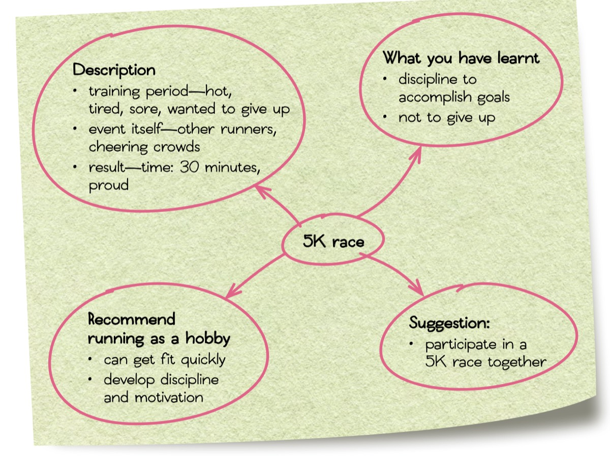
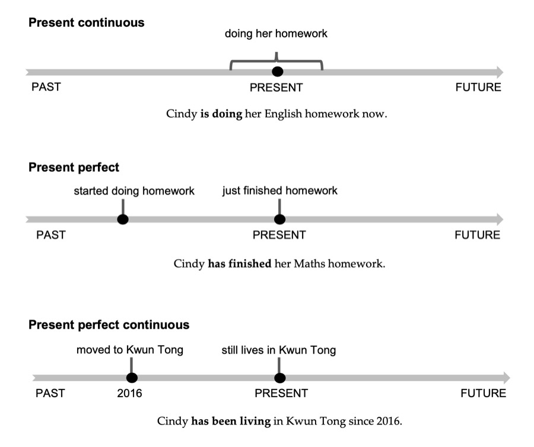
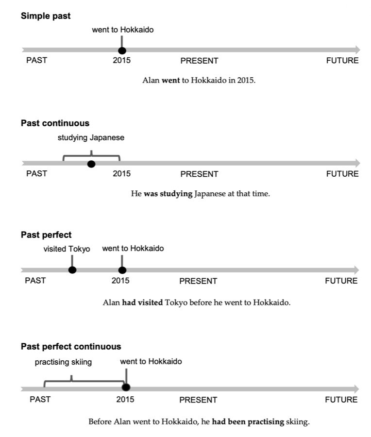
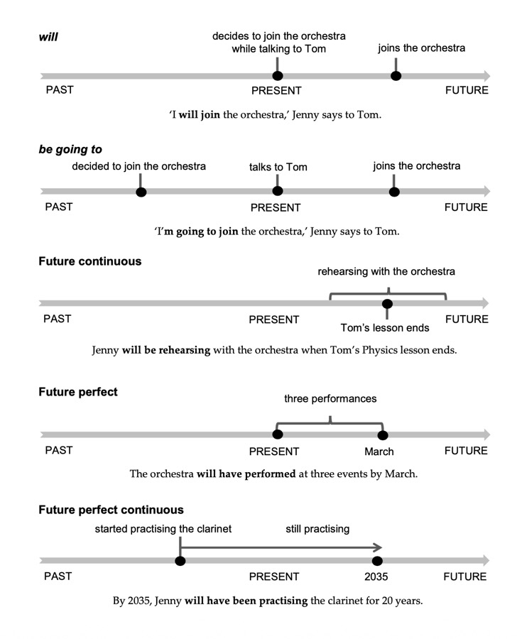

🎯 Skim for gist
Identify the theme of a text quickly by reading the title, subtitles, first & last paragraphs, and visual clues.
✍️ Identify writer's purpose
Recognise whether a text aims to argue / criticize / entertain / evaluate / explore / express / inform / instruct / persuade / satirize.
📖 Answer Paper-1 style questions
Practise reference questions, MC, T/F/NG, gap-fill, chronological ordering and matching on authentic texts.
📝 Plan a piece of writing
Use question analysis, outlines, mind maps and tables to structure a 150–180 word blog entry.
⏱ Master the 16 tenses
Know when to use present, past and future forms — and apply them in proofreading, biography and letter writing.
🛠 Build exam stamina
Complete Diagnostic Exercise 1 and all Unit 1 exam practice under timed conditions.
To understand the topic of a text, you do not need to read every word. Instead, you can run your eyes quickly over the text to get an idea of the general theme or 'gist'. Skimming can help you decide whether you need to read all or part of a text in more detail, and can save you time. Skimming is useful when answering questions that require you to identify the theme or overall views expressed in a text.
When you skim a text, you should:
• Look at the title, the subtitles, and the first and last paragraphs.
• Read the first and last sentences of the other paragraphs.
• Look at any diagrams, graphics, pictures and captions (if any), as well as any text in bold or capitals.
• Think about the overall meaning of the text.
💡 Strategy
There are on average 84 marks in Paper 1 and the time allowed is 90 minutes. Skimming can help you read more in less time.
🚀 Booster
To familiarize yourself with the theme of this unit, go to page 1 for theme-related vocabulary and warm-up questions. This text is analysed in the 'Writing' section on p.32.
Post 31: Playing the wrong tune in an exam — October 20
A2 · Read again carefully
Now read the text again carefully and check whether your answers in Exercise A1 were correct.
✅ Right-click to highlight key phrases. The passage will stay with you in later slides via Hard Mode.
🔍 Close-reading check
• Which paragraph tells you the genre (blog)?
• Which sentence explains the subtitle "It pays to dress for success"?
• How does the writer feel at the end?
• Genre clues: website address, "Post 31", date line, direct address to "all you other nervous students" (¶1) and "Good luck, everyone!" (¶5).
• Subtitle explained: "I put on my smartest clothes … to look my best" (¶2) — but the plan backfires when the socks play music.
• Final feeling: relieved / amused — "thankfully, I passed with flying colours" and hopes the story "relieved a bit of exam stress".
On page 2 of this unit, you learnt how to use skimming (looking at the title, subtitle, captions, graphics, first and last paragraphs, etc) to get an idea of the general theme or gist of a text.
Once you understand the theme of a text, you can probably identify its purpose. Texts are written for many different purposes, such as:
Ten common purposes
to argue / to criticize / to entertain / to evaluate / to explore
to express / to inform / to instruct / to persuade / to satirize
A text may also have more than one intended purpose. Once you have identified the purpose or purposes of a text, you will be able to make an educated guess about where that type of text is likely to appear, e.g. in a newspaper, magazine, blog or diary. The writer's purposes can be stated explicitly or you may have to infer their intent.
🎯 Hit the mark
• Read each paragraph carefully. Think about the effect it is meant to have on the reader. Use the verbs on the list above to help you.
• What is the text as a whole meant to do? If you could sum it up in one sentence, what would you say?
Private tuition: is it the right choice for your child?
B1 · Skim & predict
Skim the article. Think about its overall purpose.
The text aims to inform readers of the pros and cons of private tuition and to advise parents to think carefully before deciding.
Skimming checkpoints
• Title asks a question → the writer will evaluate.
• ¶1 ends with "is this a practice that should be encouraged?" → balanced discussion.
• ¶2 "advantages" vs ¶3 "Yet … may not always be the right choice" → pros & cons structure.
• ¶4 recommendation → aimed at parents.
① Based on the title, why do you think the writer wrote this text?
The title is a direct question to parents ("is it the right choice for your child?"), so the writer wants to help parents weigh up private tuition.
② Which phrases do you think best describe the writer's purpose?
to inform (pros and cons) and to evaluate / to persuade gently (parents should consider trade-offs).
③ Was the writer's purpose explicitly stated?
Partly — ¶1 asks the guiding question and ¶4 states the advice, but the overall judgement must be inferred from the balanced structure.
④ Do you think the writer fulfilled his/her intended purpose?
Open answer — e.g. Yes: both sides are presented with clear supporting points, so parents can make an informed decision.
there aren't enough hours in the day
For South Korean students, there aren't enough hours in the day — By Luna Kim
Reading strategy
① Skim title + first sentences → topic: education pressure in South Korea.
② Note the K-pop comparison in ¶1 — it sets up the analogy.
③ Watch for reference words ('it', 'they') and time expressions.
④ Right-click to highlight evidence for Q1–Q11.
Key phrases to hunt
• "gruelling rehearsal and performance schedules" (¶1)
• "at breaking point" (¶4)
• "noses to the grindstone" (¶4)
• "slave away" (¶1)
Comments on the article
Who's who?
• JessieM — ex-student, positive about the system.
• Bobsy — critical; quotes happiness and suicide statistics.
• KimmyL — teacher with Singapore experience; balanced but worried about true education.
Attitude check
For Q15, decide whether each person would agree, disagree or neither with: "The Korean education system is a recipe for success."
3. Based on the information in paragraph 1, complete the summary by writing ONE word in each blank. You should make sure your answers are grammatically correct. (3 marks)
The South Korean system of education can be compared to its (i) ____ industry. Both are known around the (ii) ____ for forcing ambitious young people to (iii) ____ extremely hard, in the hope of achieving success.
(i) music — the K-pop music industry is the comparison in ¶1.
(ii) world — "world-famous … its education system".
(iii) work — "slave away for long hours" = work extremely hard (grammatically needed after "to").
5. According to paragraphs 2–3, are the following statements True (T), False (F) or Not Given (NG)?
i) New government rules have greatly reduced demand for hagwons.
ii) Most Korean students go straight from their school to a hagwon.
iii) Many Korean parents are in favour of private tuition.
iv) Some Korean students study for more than 12 hours a day.
8. Complete the information by writing ONE word taken from the relevant paragraph in each blank below. Your answers must be grammatically correct. (4 marks)
| Paragraph | ACTION | CONSEQUENCE |
|---|---|---|
| 2 | New rules for how long hagwons can stay open implemented by the Korean (i) ____. | Contrary to expectations, demand for extra lessons is still (ii) ____. |
| 3 | Students study from dusk till dawn in order to get good exam results. | The more they study, the more the (iii) ____ to succeed increases. |
| 4 | Universities are urged to give more consideration to students' non-academic attainments. | Students can boost their chances of getting into university by doing (iv) ____ work or other extracurricular activities. |
13. Number the following events from JessieM's life in chronological order with '1' as the earliest. Write (2–4) in the boxes provided. (3 marks)
| e.g. She used to study until late at night. | 1 |
| i) She went to a well-respected university. | ____ |
| ii) Because of the hagwons, she got good exam results. | ____ |
| iii) She entered a career field she enjoys. | ____ |
15. What is the most likely opinion of each of the three people towards the statement 'The Korean education system is a recipe for success'? (3 marks)
| Agrees | Disagrees | Neither agrees nor disagrees | |
|---|---|---|---|
| i) JessieM | ____ | ||
| ii) Bobsy | ____ | ||
| iii) KimmyL | ____ |
JessieM — Agrees: "the best in the world … helps you prepare yourself for life".
Bobsy — Disagrees: quotes bottom-of-rankings happiness and highest suicide rate; "changed for the better".
KimmyL — Neither: acknowledges cram schools "offer advantages in helping students prepare for exams" yet laments students "miss out on the true value of education" — she sees both sides without a clear verdict on the system as a recipe for success.
— END OF PART A —
Text 2: New day, new horizons
Narrative voice
This is a first-person recollection of a classroom. Notice the sensory details (heat, bleach, polished floor) and the personification of the classroom ("greeted me with encouragement").
Targets for Q16–Q22
• ¶1 — heat & air-con details (Q16)
• ¶2 — Mrs Lam's movement (Q17)
• ¶3 — "this space", cleaning routine (Q18–19)
• Overall message & genre (Q20–22)
16. Complete the summary of paragraph 1 by using ONE word taken from paragraph 1 for each gap. (3 marks)
The air-conditioning system did not function properly, making it difficult for the air to (i) ____ in the classroom. In summer, parts of the room were (ii) ____ because of the bright sunlight. Although it was possible to find a cooler desk in a (iii) ____ spot, even there the heat was uncomfortable.
🔑 必须从¶1取词：circulate / scorching / shady 均可原词定位。19. According to paragraph 3, are the following statements True (T), False (F) or Not Given (NG)?
i) Students were encouraged to write on the whiteboard.
ii) The classroom was cleaned when the students were not there.
iii) Students were required to clean their own desks.
iv) The classroom was a welcoming space for the writer.
Text 3 — Hi Matty, … Love, Janice
Love,
Janice
Letter features
• Informal salutation "Hi Matty" and closing "Love, Janice".
• Contractions and exclamation marks → friendly tone.
• Compares school in Hong Kong with university in London.
Targets for Q23–Q30
• ¶2 — Julie, homesick, free time (Q23–26)
• ¶3 — lectures vs tutorials, independence (Q26–27)
• Subheadings matching (Q27), places (Q28), feelings (Q29), genre (Q30)
26. Complete the following table. Fill in each blank with ONE word found in paragraphs 2–3. (4 marks)
| School | University | |
|---|---|---|
| Time management | Little free time outside of classes | More free time, which students are expected to spend studying or doing (i) ____ |
| Class size | Comparatively small | (ii) ____ halls can hold up to 200 people, while tutorials are usually smaller and allow more (iii) ____ learning. |
| Learning style | Supervised by teachers | Students learn (iv) ____ |
27. Match the correct subheadings (A–D) to the paragraphs in the text. Write the letter in the space next to the paragraph numbers. (4 marks)
Drag each subheading into the matching paragraph box, then press Check.
1 → C (How are you? Are you worried…?) · 2 → D (free time, library, research) · 3 → B (huge classes vs school) · 4 → A (Stay motivated and keep studying!)
🔑 标题匹配：读每段首末句，抓主题词（¶1 问候 / ¶2 时间 / ¶3 对比 / ¶4 鼓励）。(ii) She has gotten used to the freedom // she now enjoys having more freedom.
🔑 情感变化题：抓 ¶3 结尾 "I got a bit stressed … but I'm getting used to the freedom now" — 过去 stressed → 现在 used to / enjoys。— END OF PART B1 —
Featured skill: Skimming; Understanding the writer's purpose
Featured question type: Thematic questions
Featured question formats: Multiple-choice questions; Matching titles to texts questions
Text 1 — Too many balls in the air? · Posted 20 May
Text 1 at a glance
• Genre: blog entry (date stamp, "my loyal readers", comments invitation)
• Writer: a 15-year-old student
• Dilemma: join the volleyball team or focus on studies?
Title wordplay
"Too many balls in the air" — think of both the literal volleyball and the idiom of juggling too many tasks. Needed for Q7.
Text 2 — Dear Ben, … Best wishes, Kathy
Best wishes,
Kathy
Text 2 at a glance
• Genre: personal email ("Dear Ben", "drop you a line", "Best wishes")
• Writer: Kathy — shares her orienteering experience
• Purpose: encourage Ben by telling her own story
Text 3 — The new and improved me! · Posted 14 June
Text 3 at a glance
• Genre: blog entry (posted, addressing readers)
• Same writer as Text 1 — the follow-up post!
• Message: sport improved body, mind, social life AND studies
Text 4 — Posted by Rab56 at 19.42, 23 June
Text 4 at a glance
• Genre: online comment (username + timestamp)
• Rab56 took up yoga after reading the post
• Tone: grateful — "I'm eternally grateful!"
ii) It refers to the writer worrying that he would have too many things to do, i.e. 'too many balls in the air', if he decided to join the team.
12. Match the titles/alternative titles to the correct texts. Write 1–4 in the appropriate boxes. (4 marks)
Drag each title onto the correct text number, then press Check.
In your debt for ever → 4 · In two minds → 1 · Some words of encouragement → 2 · A change for the better → 3
🔑 标题匹配：Text 1 犹豫不决（in two minds）；Text 2 Kathy 鼓励；Text 3 焕然一新；Text 4 感恩（in your debt）。— END OF DIAGNOSTIC EXERCISE 1 —
Whenever you produce a piece of writing, it is important that you plan your work carefully before you start. Be very clear about the purpose of the text you are about to write.
📝 Exam question (Paper 2 Part B)
You have recently trained for and competed in a 5K race to raise money for a charity. Write an email to your friend Lucy describing the experience, what you have learnt from it and why you recommend running as a hobby.
Complete the question analysis — click each blank to reveal
• Who am I? ____
• Who is the reader? ____
• What is the context? ____
• Text type: ____
• Type of writing: ____
• Is the platform private or public? ____
• What tone should I use? ____
• Task objective 1: ____
• Task objective 2: ____
• Task objective 3: ____
When you think about the platform, consider where the writing takes place. Are you writing for a website or a magazine? Is the writing private (e.g. a letter to a friend) or public (e.g. a newspaper article)?
📏 Consider the length
In Part A of the Paper 2 exam, you need to write 200 words — at least three paragraphs. In Part B, you should write about 400 words — at least five paragraphs. Each paragraph covers one main point and may have several subsidiary points.
🧰 There are several ways to plan your writing
1️⃣ Use an organizational tool — headings and subheadings (outline)
2️⃣ Use a mind map
3️⃣ Use a table to structure your ideas
4️⃣ Think about how to connect your paragraphs logically; if difficult, re-order them now
5️⃣ Refer back to your outline as you write — check what you planned to write next at the end of every paragraph
Sample outline for the 5K-race email
1. Opening
– Ask how your friend is
– Reason for writing — competed in a 5K race
2. Describe the experience
– training period — hot, tired, sore, wanted to give up
– event itself — cheering crowds, other runners
– result — ran the race in 30 minutes, felt proud
3. What you learnt
– discipline to accomplish goals
– not to give up
4. Recommend running as a hobby
– can get fit quickly
– develop discipline and motivation
5. Closing paragraph (short)
– there is another 5K race in two months — suggest we do it together
– ask Lucy to write
Closing and signature
Central idea → branches
Put the topic in the centre and branch out into main points, then subsidiary points:

📷 课本原图 — 5K race 思维导图（点击图片放大查看）
Use a table to structure your ideas
| Paragraph | Main point | Subsidiary point(s) |
|---|---|---|
| Opening | participated in 5K race | • enquire about friend |
| Body paragraph 1 | description of 5K race | • training period—hot, tired, sore, wanted to give up • race day—other runners, cheering crowds • finished in 30 mins—felt proud |
| Body paragraph 2 | what I have learnt from it | • discipline to accomplish goals • not to give up |
| Body paragraph 3 | benefits of running | • can get fit quickly • develop discipline and motivation |
| Closing paragraph | another 5K race | • do it together? |
🎯 适用对象：DSE 阅读基础较弱（分数不足2分）的同学。📌 以下 10 个单词全部来自今天的范文——你认识吗？点击卡片翻面看中文意思！
🔹 Section A：邮件开头
问题引导：这是一封什么类型的邮件？（给朋友的私人邮件）邮件开头通常要做什么？（问候朋友 + 说明写信原因）
| 你最近怎么样？ | ____ |
| 我写信是为了告诉你…… | ____ |
| 一次很棒的经历 | ____ |
| 参加……比赛 | ____ |
| 为慈善筹款 | ____ |
🔹 Section B：描述经历 (Description of the 5K race)
问题引导：训练期间感觉如何？（热、累、酸痛、想放弃）比赛当天看到了什么？（其他选手、欢呼的人群）比赛结果如何？（30分钟完赛、感到骄傲）
| 训练期真的很艰难 | ____ |
| 每天早起跑步 | ____ |
| 感到又热又累又酸痛 | ____ |
| 有几次我想放弃 | ____ |
| 但我坚持了下来 | ____ |
| 比赛当天 | ____ |
| 一开始感到紧张 | ____ |
| 看到欢呼的人群 | ____ |
| 最终 | ____ |
| 30分钟完成比赛 | ____ |
| 为自己感到骄傲 | ____ |
🔹 Section C：学到的东西 (What you have learnt from it)
问题引导：从中学到了什么？（自律的重要性、不要放弃）完成目标需要什么？（自律）
| 从这次经历中 | ____ |
| 学到了自律的重要性 | ____ |
| 完成目标需要自律 | ____ |
| 也学会了不要放弃 | ____ |
| 即使事情变得困难 | ____ |
🔹 Section D：推荐与结尾 (Recommend running as a hobby · participate in a 5K race together)
问题引导：为什么推荐跑步作为爱好？（快速健身、培养自律和动力）结尾如何邀请朋友一起参加？
| 这就是为什么我强烈推荐…… | ____ |
| 帮助快速健身 | ____ |
| 培养自律和动力 | ____ |
| 两个月后还有另一场5K比赛 | ____ |
| 你愿意一起做吗？ | ____ |
| 尽快回信 | ____ |
📌 请根据词伙提示，把以下中文逐句翻译成英文。写完再点击 Show answer 对照。
句一：你最近怎么样？我写信是为了告诉你一次很棒的经历。
词伙：How have you been? · I am writing to tell you about... · an amazing experience
句二：上周末我参加了一场5K比赛，为慈善筹款。
词伙：last weekend · take part in... · raise money for a charity
句一：训练期真的很艰难。我每天早起跑步，经常感到又热又累又酸痛。
词伙：the training period was really tough · get up early every morning to run · feel hot, tired and sore
The training period was really tough. I had to get up early every morning to run, and I often felt hot, tired and sore.
句二：有几次我想放弃，但我坚持了下来。
词伙：there were times when... · wanted to give up · but I kept going
There were times when I wanted to give up, but I kept going.
句三：比赛当天，我一开始感到紧张。然而，当我看到欢呼的人群和其他选手时，我感到兴奋并准备好了。
词伙：on the day of the race · feel nervous at first · however · see the cheering crowds · feel excited and ready
On the day of the race, I felt nervous at first. However, when I saw the cheering crowds and other runners around me, I felt excited and ready.
句四：最终，我在30分钟内完成了比赛，为自己感到骄傲。
词伙：in the end · finish the race in 30 minutes · feel proud of myself
In the end, I finished the race in 30 minutes, and I felt so proud of myself.
📌 以下段落只提供整段大意、必用词伙和公式化句式。请用上所有词伙和句式，写出完整段落，再点击对照参考答案。
🟠 主体段二（What You Learnt）
整段大意：从这次经历中学到了自律的重要性；完成目标需要自律；也学会了不要放弃，即使事情变困难。
必用句式：「From this experience, I have learnt + 名词」·「It takes + 名词 + to + 动词」·「I have also learnt not to + 动词，even when + 句子」
必用词伙：the importance of discipline · accomplish your goals · give up · things get difficult
From this experience, I have learnt the importance of discipline. It takes discipline to accomplish your goals. I have also learnt not to give up, even when things get difficult.
🟢 主体段三（Recommend Running）
整段大意：强烈推荐跑步作为爱好；帮助快速健身；培养自律和动力。
必用句式：「That is why I strongly recommend + 名词/动名词」·「It can help you + 动词 + and + 动词」
必用词伙：running as a hobby · get fit quickly · develop discipline and motivation
That is why I strongly recommend running as a hobby. It can help you get fit quickly and develop discipline and motivation.
🔵 结尾段（Closing Paragraph）
整段大意：两个月后还有另一场5K比赛，邀请Lucy一起做，然后礼貌结束邮件。
必用句式：「There is/are + 名词 + in + 时间」·「would you like to + 动词？」·「Write back soon!」
必用词伙：another 5K race · in two months · do it together
There is another 5K race in two months — would you like to do it together? Write back soon!
🚪 出门测 — 以下 10 个词伙全部来自今天的范文，把中文翻译成英文（点击核对）
| 1. 为慈善筹款 | ____ | 6. 看到欢呼的人群 | ____ |
| 2. 参加……比赛 | ____ | 7. 为自己感到骄傲 | ____ |
| 3. 训练期真的很艰难 | ____ | 8. 学到了……的重要性 | ____ |
| 4. 想放弃 | ____ | 9. 完成目标 | ____ |
| 5. 坚持了下来 | ____ | 10. 强烈推荐……作为爱好 | ____ |
✅ 范文全文（150–180 字目标）
How have you been? I am writing to tell you about an amazing experience I had last weekend. I took part in a 5K race to raise money for a charity.
The training period was really tough. I had to get up early every morning to run, and I often felt hot, tired and sore. There were times when I wanted to give up, but I kept going. On the day of the race, I felt nervous at first. However, when I saw the cheering crowds and other runners around me, I felt excited and ready. In the end, I finished the race in 30 minutes, and I felt so proud of myself.
From this experience, I have learnt the importance of discipline. It takes discipline to accomplish your goals. I have also learnt not to give up, even when things get difficult.
That is why I strongly recommend running as a hobby. It can help you get fit quickly and develop discipline and motivation.
There is another 5K race in two months — would you like to do it together? Write back soon!
📌 教学提示
• 入门测：课前暖场，检验基础词汇储备，无需打分
• Part Two（中翻英词伙）：师生共同完成，老师引导讲解
• Part Three（逐句翻译）：课堂当场练习，老师实时纠错
• Part Four（大意提示写作）：课后独立完成或课内小测
• 出门测：课尾检验词伙掌握情况，可与入门测对比进步
• 整合全文后检查是否达到 150–180 字要求
• 注意这是一封私人邮件，语气要 informal and friendly
In Part A of the exam, you will need to write about 200 words. In this unit, you only need to write 150–180 words.
Question 1 — Blog entry
The Change the World website is asking students from around the world to contribute to a new online project, 'Making a difference at your school'. They want you to write a blog entry and then link it to their site.
• Write a blog entry describing a meaningful event held at your school to students in other parts of the world.
• Tell them what the event was and why it was meaningful.
Use a mind map to plan your writing.
📚 Useful vocabulary and expressions
• an excellent opportunity
• to voice complaints/doubts
• The event I want to describe is …
• This was a chance for students to talk about their problems/express their opinions.
• All kinds of people took part, including …
• A lot of (good/great) ideas were presented/discussed at/during the event.
• Suggestions for improvements …
• How to reduce and manage stress …
💡 Writing tips — Describing an event
• Explain clearly what the event was, using examples if necessary.
• Say when and where the event took place.
• Explain what happened at the event.
• Write about the end result of the event.
In Part B of the exam, you will need to write 400 words. In this unit, you only need to write 250–300 words. For questions 2–5, choose ONE question.
Question 2 — Informal email
You recently went to see a performance of a musical, performed by your school's Theatre Group. It was the best school performance you have ever seen.
Write an informal email to your friend Lucy about the show, explaining what was good about it and why you enjoyed it so much.
Question 3 — Blog entry
You are worried about the amount of stress and exam pressure you and your schoolmates are facing.
Write a blog entry about the issue, describing the problem and discussing ways to deal with it. Suggest what could be done in the future to reduce the amount of pressure students face.
| Paragraph | Main point | Subsidiary point(s) |
|---|---|---|
| Opening | ||
| Body paragraph 1 | ||
| Body paragraph 2 | ||
| Body paragraph 3 | ||
| Closing paragraph |
💡 Writing tips
• When describing an event, try dividing it up into different aspects (e.g. the people and the activities) for a more organized and easy-to-read piece.
• If you are asked to describe an idea to a friend, it is always desirable to ask for their opinions instead of merely telling him/her about the idea.
• If you have to write a letter or an email, identify whether it should be a formal or informal one.
• If an informal letter or email is required, you can use contractions and colloquial phrases (but not slang). You should also pay attention to your salutation (Dear John, Hi Mary, etc.) and closing (Take care, Talk to you soon, etc.).
• For each main point, start a new paragraph to ensure a clear and well-structured presentation.
| 时态 | 一般时 | 进行时 | 完成时 | 完成进行时 |
|---|---|---|---|---|
| 现在 | *一般现在时 Do/does Is/am/are |
*现在进行时 doing |
*现在完成时 Have/has done |
现在完成进行时 Have/has been doing |
| 过去 | *一般过去时 did |
过去进行时 Was/were doing |
^过去完成时 Had done |
过去完成进行时 Had been doing |
| 将来 | *一般将来时 Will do |
将来进行时 Will be doing |
将来完成时 Will have done |
将来完成进行时 Will have been doing |
| 过去将来 | ^过去将来时 Would do |
过去将来进行时 Would be doing |
^过去将来完成时 Would have done |
^过去将来完成进行时 Would have been doing |
* 写作中需熟练掌握 ^ 使用虚拟语气可加分
Simple present 一般现在时
| Situation | Example(s) |
|---|---|
| facts, truths, permanent situations, preferences and opinions | The sun rises in the east. Cindy's eyes are grey. Do you like sushi? I don't exactly love it. |
| routines and habits | I usually go to bed at 11.00 p.m. She always sits at this table. |
| future events in schedules and timetables | The film starts at 7.30 p.m. |
Present continuous 现在进行时
| Situation | Example(s) |
|---|---|
| actions happening now or around the moment of speaking | I am having lunch right now. They are spending a lot of time together. |
| actions which repeat frequently | He is always asking for help. |
| changing situations | The cost of housing is increasing. |
| definite arrangements in the near future | We are visiting the Peak tomorrow. |
Present perfect 现在完成时
| Situation | Example |
|---|---|
| actions that began in the past but still continue now | We have been married for 12 years. |
| actions completed recently | She has just finished school. |
| past actions that have a result in, or an effect on, the present moment | She has broken her arm and it still hurts. |
| actions that happened at an indefinite time in the past | He has climbed Mount Everest. |
Present perfect continuous 现在完成进行时
| Situation | Example |
|---|---|
| longer past actions that are still continuing | We have been walking for hours! |
| actions that have been repeating over a period of time in the past | I have been going to the gym a lot lately. |
| past actions that have only just finished but have a result in the present | He's all out of money because he has been shopping all day. |
Cindy is doing her English homework now. (Present continuous)
Cindy has finished her Maths homework. (Present perfect)
Cindy has been living in Kwun Tong since 2016. (Present perfect continuous)

📷 课本原图 — 现在时态时间轴（点击图片放大）
Dear editor, — click each blank to reveal the correct form
I (1) ____ (write) in response to Brenda Wong's letter on the idea of labelling unhealthy foods, especially foods that (2) ____ (be) high in salt, sugar or saturated fat. Wong (3) ____ (argue) that people would consume less unhealthy foods if they could see clear warning labels on the packaging. However, I (4) ____ (not/think) that idea would work well.
Look at the case of cigarettes. The law (5) ____ (require) cigarette producers and sellers to put warning labels on cigarette packaging. Over the years, the sizes of the labels (6) ____ (increase) and the designs (7) ____ (become) more graphic than before. However, many people (8) ____ (still/smoke).
In my opinion, education about the harmful effects of unhealthy foods (9) ____ (be) more effective in reducing their consumption than putting warning labels on them. The earlier we (10) ____ (teach) our children about good eating habits the better. Once they get older, it is more difficult for them to change bad habits.
Simon Wong
Tsuen Wan
| 题号 | 答案 | 时态 | 考点说明 |
|---|---|---|---|
| 1 | am writing | 现在进行时 | 此刻正在进行的动作（写这封信） |
| 2 | are | 一般现在时 | 客观事实、常态 |
| 3 | argues | 一般现在时 | 表达观点、常态 |
| 4 | don't think | 一般现在时 | 表达个人观点 |
| 5 | requires | 一般现在时 | 法律规定、客观事实 |
| 6 | have been increasing / have increased | 现在完成进行时 / 现在完成时 | 过去开始持续到现在，强调变化过程 |
| 7 | have become | 现在完成时 | 过去发生对现在有影响的变化 |
| 8 | still smoke | 一般现在时 | 常态、习惯性动作 |
| 9 | is | 一般现在时 | 表达观点、客观判断 |
| 10 | teach | 一般现在时 | "the + 比较级..., the + 比较级..." 句型用一般现在时 |
A film review appeared in the following HKDSE English Language Exam: 2019 Paper 2 Question 6. You may be asked to write a film/book review in the HKDSE English Language Exam Paper 2. Normally, a film/book review includes a brief description of the plot and the writer's opinions on the film/book. When we describe the plot, we usually use the present tenses.
Book review: Sand Rider — 每行可能有一个错误，正确则打 ✓
Your classmate Timothy has asked you to help him proofread a book review he has written for the school magazine. Each line of the text below may have one mistake. Correct mistakes as shown below. If the line is correct then put a tick (✓) in the right-hand column.
Tap each row to reveal the correction:
| (1) Renowned fantasy author Frank Scott's latest novel, Sand Rider, told the | |
| (2) story of a young prince who, more than anything, wanted to ride one of | |
| (3) the huge sand worms which live on the Desert Planet. The book was the | |
| (4) most recent installment in Sherbet's long-running book series. ✓ | |
| (5) The lead character of this story is Prince Raul, who was obsessed with | |
| (6) the planet's sand worms since he was a boy. Now that he grows up, he is | |
| (7) on a mission: to track down and ride a sand worm. Readers will follow | |
| (8) the prince's desert journey. As Scott's story unfolded, the reader wonders | |
| (9) if Raul's obsession is actually as harmless as it first has appeared. | |
| (10) In the story, Scott included a lot of jokes and a lot of cultural knowledge. | |
| (11) He also hints at the dangers of trying to control nature, which he saw | |
| (12) as uncontrollable, and warned readers that only the foolish seek to | |
| (13) conquer nature. Whether you want to read a fun story or learn more ✓ | |
| (14) about imagined cultures, Sand Rider is a page-turner that will surely ✓ | |
| (15) appeal to you. ✓ |
注：第 (1) 行 told→tells 为题目示例（example），第 (4) 行 ✓ 亦为例示。
✅ 完整正确版本
Renowned fantasy author Frank Scott's latest novel, Sand Rider, tells the story of a young prince who, more than anything, wants to ride one of the huge sand worms which live on the Desert Planet. The book is the most recent installment in Sherbet's long-running book series.
The lead character of this story is Prince Raul, who has been obsessed with the planet's sand worms since he was a boy. Now that he has grown up, he is on a mission: to track down and ride a sand worm. Readers follow the prince's desert journey. As Scott's story unfolds, the reader wonders if Raul's obsession is actually as harmless as it first appears.
In the story, Scott includes a lot of jokes and a lot of cultural knowledge. He also hints at the dangers of trying to control nature, which he sees as uncontrollable, and warns readers that only the foolish seek to conquer nature. Whether you want to read a fun story or learn more about imagined cultures, Sand Rider is a page-turner that will surely appeal to you.
📋 考点解析 — 核心考点：书评中描述故事情节用一般现在时
| 题号 | 错误类型 | 说明 |
|---|---|---|
| 1 | 时态错误 | 描述书籍内容用一般现在时，told → tells |
| 2 | 时态错误 | 描述人物想法用一般现在时，wanted → wants |
| 3 | 时态错误 | 描述书籍状态用一般现在时，was → is |
| 4 | ✓ 正确 | 无错误 |
| 5 | 时态错误 | 有since时间状语用现在完成时，was obsessed → has been obsessed |
| 6 | 时态错误 | 强调"已经长大"的结果用现在完成时，grows up → has grown up |
| 7 | 时态错误 | 描述故事情节用一般现在时，will follow → follow |
| 8 | 时态错误 | 描述故事发展用一般现在时，unfolded → unfolds |
| 9 | 时态错误 | 描述故事中的初次印象用一般现在时，has appeared → appears |
| 10 | 时态错误 | 描述作者写作内容用一般现在时，included → includes |
| 11 | 时态错误 | 描述书中人物观点用一般现在时，saw → sees |
| 12 | 时态错误 | 描述作者意图用一般现在时，warned → warns |
| 13–15 | ✓ 正确 | 无错误 |
📌 左侧语法提示
• We use an adjective to describe characters and other things in books. Refer to Unit 18 for more information.
• We use a defining relative clause to introduce readers to the person or thing we are referring to. Refer to Unit 21 for more information.
• We use a non-defining relative clause to provide additional information about a person or thing. Refer to Unit 21 for more information.
Simple past 一般过去时
| Situation | Example(s) |
|---|---|
| completed actions at a definite time in the past | I saw Angela yesterday. |
| states/conditions and repeated events in the past | They did not like each other. We went to Spain every summer. |
Past continuous 过去进行时
| Situation | Example |
|---|---|
| actions in progress around a time in the past | I was sleeping earlier. |
| two longer or ongoing actions continuing over a similar period in the past | Lucy was chopping the vegetables while I was preparing the fish. |
| one longer past action that was interrupted by a shorter past action | As I was looking out the window, an eagle flew by. |
| definite arrangements in the past | We were flying to Paris the next day. |
Past perfect 过去完成时
| Situation | Example |
|---|---|
| past actions that finished some time before another past action | By the time the firefighters arrived, the house had burnt down. |
| actions that began before a time in the past, and just finished at that time | Before I came here last year, I had always wanted to visit Hong Kong. |
| unrealized hopes or wishes | If only I had not behaved so badly. |
Past perfect continuous 过去完成进行时
| Situation | Example |
|---|---|
| past actions that began before a time in the past, and continued up to that time or stopped just beforehand | He had been shivering before he put on his coat. |
| ongoing or repeated past actions that began some time in the past | I had been calling her for hours before she finally picked up. |
Alan went to Hokkaido in 2015. (Simple past)
He was studying Japanese at that time. (Past continuous)
Alan had visited Tokyo before he went to Hokkaido. (Past perfect)
Before Alan went to Hokkaido, he had been practising skiing. (Past perfect continuous)

📷 课本原图 — 过去时态时间轴（点击图片放大）
When writing a biography, the past tenses are often used to talk about the deceased person's background, experience, achievements and so on, since they took place at a past time. Complete the short biography using the correct forms of the verbs given in brackets.
Chadwick Boseman (26 November 1976 - 28 August 2020)
Chadwick Boseman (1) ____ (be) a famous actor. He (2) ____ (be) best known for playing the superhero Black Panther.
Before playing Black Panther, Boseman (3) ____ (act) in a few films and TV series, and (4) ____ (write) and (5) ____ (direct) some plays. However, it (6) ____ (be) the superhero character that (7) ____ (make) him a household name. He (8) ____ (play) this role four times, and the films (9) ____ (be) all box-office successes.
Boseman (10) ____ (pass away) on 28 August 2020 due to cancer. He (11) ____ (receive) cancer treatment while he (12) ____ (make) those films that (13) ____ (make) him a star, but he only (14) ____ (let) a few people know about it.
His performances (15) ____ (be loved) by both audiences and critics. Many people think his films are entertaining and inspiring. On screen and in his fans' hearts, Boseman will continue to be the great artist and entertainer he (16) ____ (be).
Complete the job application letter using the correct forms of the verbs given in brackets. One has been done for you as an example.
Re: Application for the post of barista
Dear Mr Tin,
I am writing to apply for the position of barista at your café, Mr Bean.
Your job posting on findjobs.com caught my attention not only because I (1) ____ (believe) my qualifications match all your requirements but also because I simply (2) ____ (love) coffee.
I (3) ____ (complete) the Barista Course for Beginners at the Hong Kong Artisan Coffee School, meaning I am skilled in different types of coffee making techniques.
For the past one and a half years, I (4) ____ (work) at Moon Star Café as a junior barista. My responsibilities (5) ____ (include) preparing and serving different beverages. Before this, I (6) ____ (work) at Simply Fashion as a salesperson for one year, where I (7) ____ (obtain) valuable customer service experience.
I (8) ____ (graduate) from Kowloon Secondary School in 2018. At school, I (9) ____ (be) Chairperson of the Cooking Club, an experience that (10) ____ (equip) me with stronger communication skills.
I (11) ____ (be) fluent in English, Cantonese and Mandarin, so I am able to confidently (12) ____ (serve) any international customers by (13) ____ (introduce) the menu and (14) ____ (have) friendly chats with them about the options.
I (15) ____ (attach) my job application form and my resume to this email. I would be grateful for the opportunity to discuss my suitability for the above position with you at an interview. I (16) ____ (look) forward to hearing from you soon. You can contact me at peter.lee@hkmail.com or on 6177 8711.
Thank you very much for your kind attention.
Yours sincerely,
Peter Lee
📋 答案对照表
| 题号 | 答案 | 时态/语法 | 考点说明 |
|---|---|---|---|
| 1 | believe | 一般现在时 | 表达当前的观点、想法 |
| 2 | love | 一般现在时 | 表达喜好、常态 |
| 3 | completed | 一般过去时 | 过去某个时间完成的动作（课程已结束） |
| 4 | have worked | 现在完成时 | "for + 时间段"，从过去持续到现在的工作 |
| 5 | include | 一般现在时 | 描述当前的工作职责（常态） |
| 6 | (had) worked | 过去完成时 / 一般过去时 | 在另一个过去动作之前发生的事 |
| 7 | obtained | 一般过去时 | 过去那段工作经历中获得的 |
| 8 | graduated | 一般过去时 | 2018年毕业，明确过去时间点 |
| 9 | was | 一般过去时 | 上学时的经历，过去的状态 |
| 10 | equipped | 一般过去时 | 那段经历带来的结果，过去发生 |
| 11 | am | 一般现在时 | 当前的能力、状态 |
| 12 | serve | 一般现在时（原形） | be able to + 动词原形 |
| 13 | introducing | 动名词 | by + doing（通过做某事） |
| 14 | having | 动名词 | 与introducing并列，by + doing and doing |
| 15 | have attached | 现在完成时 | 已完成的动作对现在有影响（随信附上） |
| 16 | look | 一般现在时 | 书信结尾常用表达 I look forward to... |
📌 左侧语法提示
• We may use the preposition for to talk about the time a person worked for a certain company or took a certain course. Refer to Unit 13 for more information.
• We may use the preposition at to talk about a specific place, such as where a person works. Refer to Unit 14 for more information.
• We may use an adverb to describe the way a person performs an action or a task. Refer to Units 18 and 22 for more information.
will (+ bare infinitive)
| Situation | Example(s) |
|---|---|
| giving or requesting information about the future | When will we get there? We will be there by six, at the latest. |
| predictions about the future | This film is great—you will love it! |
| decisions for the future, made at the time of speaking | Wait for me. I will buy some popcorn to eat while we watch the film. |
| intentions and attitudes | I will never leave you, I promise. |
shall (+ bare infinitive)
| Situation | Examples |
|---|---|
| obligations, e.g. offers, promises, orders | I shall not rest until my work is done. They shall pay for what they did. |
| suggestions and offers | Shall we eat out tonight? Shall I help you with that suitcase? |
be going to (+ bare infinitive)
| Situation | Example |
|---|---|
| future events that have already been decided or planned | She is going to visit Italy this summer. She booked the hotel two months ago. |
| future events that are on the way or starting to happen | We have a lot to discuss. It is going to be a long meeting. |
Simple present / Present continuous（表将来）
| Situation | Examples |
|---|---|
| future events in schedules and timetables (simple present) | The concert starts at 7 p.m. The next train to Hastings leaves at 8.15 tomorrow. |
| fixed arrangements (with time expressions) (present continuous) | We are meeting for lunch tomorrow. |
Future continuous 将来进行时
| Situation | Example |
|---|---|
| actions/events in progress at a particular point in the future | I won't be able to meet up on Saturday as I will be working. |
| actions/events that are set to happen in the future, regardless of intention | The band will be playing in Seattle next month. |
Future perfect / Future perfect continuous
| Situation | Example(s) |
|---|---|
| actions/events that will be completed by a certain point in the future | I'll give you her answer next Friday. I will have spoken to her by then. |
| continuous or repeating actions/events that happen before a certain point in the future, and that may continue | By the end of next week, we will have been living here for a year. If we have lunch at Carlo's again today, we will have been eating in the same place for a week. |
🎻 Jenny & the orchestra — 五种将来时态对照
• will: 'I will join the orchestra,' Jenny says to Tom.
• be going to: 'I'm going to join the orchestra,' Jenny says to Tom.
• Future continuous: Jenny will be rehearsing with the orchestra when Tom's Physics lesson ends.
• Future perfect: The orchestra will have performed at three events by March.
• Future perfect continuous: By 2035, Jenny will have been practising the clarinet for 20 years.

📷 课本原图 — 将来时态时间轴（点击图片放大）
📖 Skimming
Title + subtitles + first/last paragraphs + visuals → gist in under a minute.
🎯 Writer's purpose
argue / criticize / entertain / evaluate / explore / express / inform / instruct / persuade / satirize — and where the text would appear.
📝 Question types
Reference, vocabulary-in-context, MC, T/F/NG, summary cloze, table completion, chronological ordering, subheading matching, attitude questions.
✍️ Writing plan
Question analysis (who/reader/context/type/tone/objectives) → outline / mind map / table → logical paragraph order → check as you write.
⏱ Tenses
16 tenses mapped; present tenses for reviews & plots; past tenses for biographies; correct forms in letters.
📚 Texts read
Exam-socks blog · Private tuition article · South Korea hagwons · Classroom memories · Janice's letter · Volleyball blog quartet.
Well Done!
You completed Unit 1 — Hit the Books! Reading + Skill Builder (课本 & Skill Builder 全部内容).